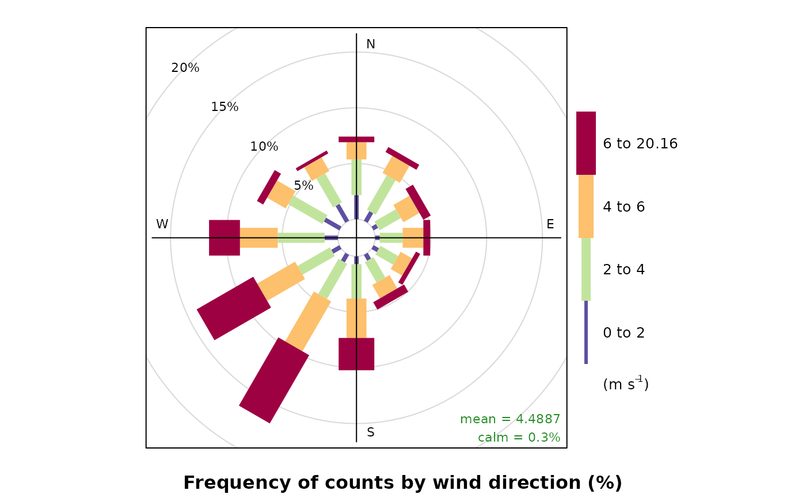
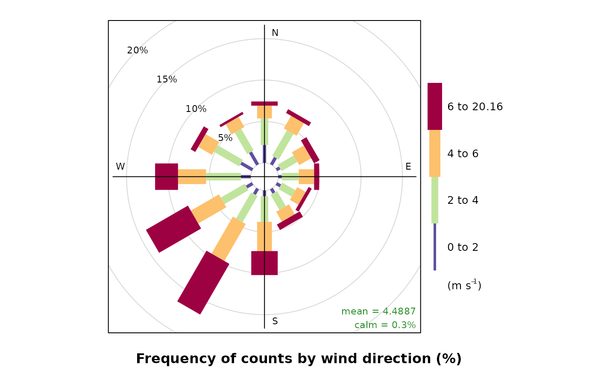

General function for producing scale keys for other openair functions. The function is a crude modification of the draw.colorkey function developed by Deepayan Sarkar as part of the lattice package, and allows additional key labelling to added, and provides some additional control of the appearance and scaling.
Arguments
- key
List defining the scale key structure to be produced. Most options are identical to original
draw.colorkeyfunction.Original
draw.colorkeyoptions:spacelocation of the scale key ("left", "right", "top" or "bottom"). Defaults to "right".colvector of colours, used in scale key.atnumeric vector specifying where the colors change. Must be of length 1 more than the col vector.labelsa character vector for labelling the at values, or more commonly, a list describing characteristics of the labels. This list may include componentslabels,at,cex,col,rot,font,fontfaceandfontfamily.tick.numberapproximate number of ticks.widthwidth of the key.heightheight of key.Note:
widthandheightrefer to the key dimensions.heightis the length of the key along the plot axis it is positioned against, andwidthis the length perpendicular to that.Additional options include:
headera character vector of extra text to be added above the key, or a list describing some characteristics of theheader. This list may include componentsheader, the character vector of header labels,tweaks, a list of local controls, e.g. 'gap' and 'balance' for spacing relative to scale and footer, respectively,auto.text,TRUE/FALSEoption to applyquickText, andslot, a numeric vector setting the size of the text boxesheadertext is placed in.footeras inheaderbut for labels below the scale key.Notes:
headerandfooterformatting can not be set locally, but instead are matched to those set inlabels.drawOpenKeyallows for up to six additional labels (three above and three below scale key). Any additional text is ignored.tweak, auto.text, slotas inheaderandfooterbut sets all options uniformly. This also overwrites anything inheaderand/orfooter.fitthe fit method to be applied to the header, scale key and footer when placing the scale key left or right of the plot. Options include: 'all', 'soft' and 'scale'. The default 'all' fits header, key and footer intoheightrange. The alternative 'scale' fits only the key withinheight. (This means that keys keep the same proportions relative to the main plot regardless of positioning but that header and footer may exceed plot dimensions ifheightand/orslotsare too large.plot.stylea character vector of key plotting style instructions: Options currently include: 'paddle', 'ticks' and 'border'. 'paddle' applies the incremental paddle layout used bywinRose. 'ticks' places ticks between the labels scale key. 'border' places a border about the scale key. Any combination of these may be used but if none set, scale key defaults toc("ticks", "border")for most plotting operations orc("paddle")forwindRose.- draw
Option to return the key object or plot it directly. The default, FALSE, should always be used within openair calls.
- vp
View port to be used when plotting key. The default, NULL, should always be used within openair calls.
(Note:
drawOpenKeyis a crude modification oflattice::draw.colorkey, that provides labelling options foropenairplot scale keys. Some aspects of the function are in development and may to subject to change. Therefore, it is recommended that you use parentopenairfunction controls, e.g.key.position,key.header,key.footeroptions, where possible.drawOpenKeymay obviously be used in other plots but it is recommended thatdraw.colorkeyitself be used wherever this type of additional scale labelling is not required.)
Value
The function is a modification of lattice::draw.colorkey and
returns a scale key using a similar mechanism to that used in in the
original function as developed by Deepayan Sarkar.
Details
The drawOpenKey function produces scale keys for other openair
functions.
Most drawOpenKey options are identical to those of
lattice::draw.colorkey. For example, scale key size and position
are controlled via height, width and space. Likewise,
the axis labelling can be set in and formatted by labels. See
draw.colorkey for further details.
Additional scale labelling may be added above and below the scale using
header and footer options within key. As in other
openair functions, automatic text formatting can be enabled via
auto.key.
(Note: Currently, the formatting of header and footer text
are fixed to the same style as labels (the scale axis) and cannot be
defined locally.)
The relationship between header, footer and the scale key
itself can be controlled using fit options. These can be set in
key$fit to apply uniform control or individually in
key$header$fit and/or key$footer$fit to control locally.
The appearance of the scale can be controlled using plot.style.
References
Deepayan Sarkar (2010). lattice: Lattice Graphics. R package version 0.18-5. http://r-forge.r-project.org/projects/lattice/
See also
Functions using drawOpenKey currently include
windRose, pollutionRose.
For details of the original function, see draw.colorkey
Author
draw.colorkey is part of the lattice package,
developed by Deepayan Sarkar.
Additional modifications by Karl Ropkins.
Examples
##########
#example 1
##########
#paddle style scale key used by windRose
windRose(mydata,)
 #adding text and changing style and position via key
#note:
#some simple key control also possible directly
#For example, below does same as
#windRose(mydata, key.position="right")
windRose(mydata,
key =list(space="right")
)

#however:
#more detailed control possible working with
#key and drawOpenKey. For example,
windRose(mydata,
key = list(header="Title", footer="wind speed",
plot.style = c("ticks", "border"),
fit = "all", height = 1,
space = "top")
)
#adding text and changing style and position via key
#note:
#some simple key control also possible directly
#For example, below does same as
#windRose(mydata, key.position="right")
windRose(mydata,
key =list(space="right")
)

#however:
#more detailed control possible working with
#key and drawOpenKey. For example,
windRose(mydata,
key = list(header="Title", footer="wind speed",
plot.style = c("ticks", "border"),
fit = "all", height = 1,
space = "top")
)